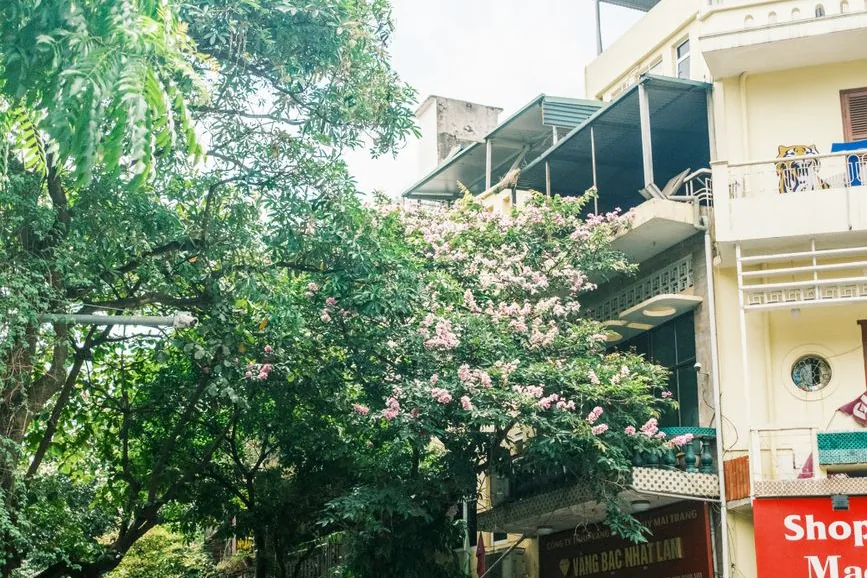
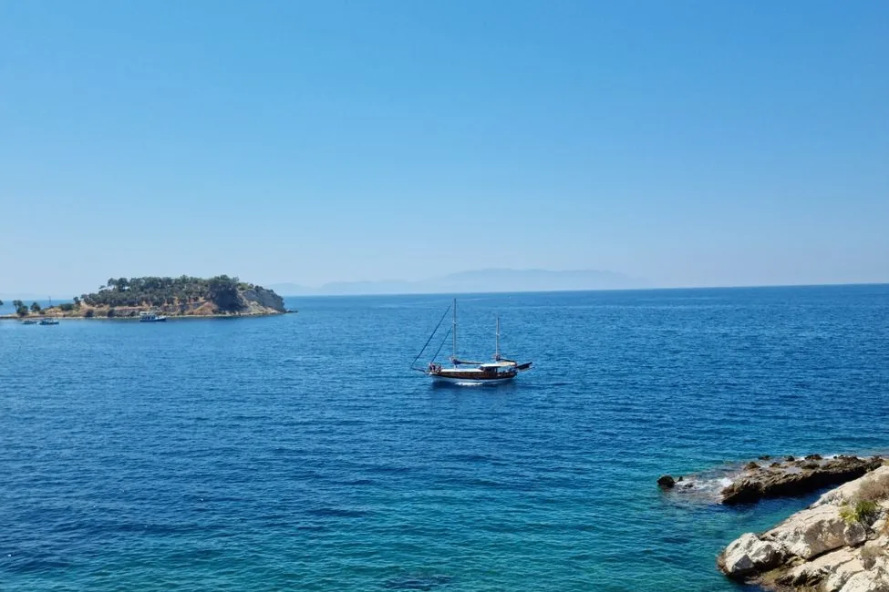

Answer first, because the listings bury it: a Halong Bay day trip is mostly a bus ride. The bay is about 200km from Hanoi, and the road takes at least three hours each way — so roughly six hours in a vehicle wrapped around four to eight hours on the water. You’ll typically leave your hotel early, disembark around 16:00–17:00, and be back in Hanoi near 20:00.
That’s not an argument against going. It’s an argument for knowing what you’re buying. If you can spare one night, the overnight cruise is a genuinely different experience — and the gap between the two is larger than the price difference suggests.

The day-trip arithmetic
Roughly what a one-day cruise costs in time and money:
| Day trip | 1 night | 2 nights | |
|---|---|---|---|
| Typical price per person | US$65–120 | US$108–300 | US$206–550 |
| Hours on the water | 4–8 | Most of two days | Most of three days |
| Hours on the road | ~6 | ~6 (spread over two days) | ~6 (spread over three) |
| Sunrise / sunset on the bay | No | Yes | Yes |
The decisive line is the last one. A day cruise arrives and leaves in the flat middle of the day — the hours when the karsts look their least dramatic. Everything people remember about Halong Bay happens at the edges of the day: mist burning off the limestone at breakfast, the water going gold at dusk, the bay quiet after the day boats have driven home.
Book the day trip if: Hanoi is short, your dates are fixed, or the budget genuinely won’t stretch. It is still worth doing — just go in knowing that half of it is a coach.
Book the overnight if you can find one spare night. For an extra US$50–100 or so you stop seeing the bay and start being in it.
One night or two?
One night is the sweet spot for most travellers. You get an afternoon on the water, sunset, dinner on board, a quiet night among the karsts, and a morning before the day boats arrive. It covers everything that makes the bay special.
Two nights buys you distance rather than more of the same. The second day pushes further from the main channels into quieter water, with more time for kayaking and swimming and far fewer boats in your photographs. Worth it if you’re a keen swimmer or kayaker, or you want the trip to be a rest rather than a sightseeing block. Otherwise the first night has already given you the highlight.
Halong, Lan Ha, or Bai Tu Long?
This is the choice that most affects how crowded your trip feels — and almost nobody makes it deliberately.
- Halong Bay is the famous one: the most boats, the most developed routes, and the busiest anchorages.
- Lan Ha Bay, just south and reached via Cat Ba, is scenically very similar but noticeably less touristy, with natural white-sand beaches and better swimming, snorkelling and kayaking. If you’re choosing on the quality of the day rather than the name on the ticket, this is usually the better pick.
- Bai Tu Long Bay, to the northeast, is the third option and also quieter than the main bay.
The scenery across them is broadly the same limestone seascape. What differs is how many other boats are in the frame.

What you actually do on board
Most overnight itineraries share a shape: cave exploration, swimming, kayaking through quiet lagoons, and evening squid fishing off the back of the boat. Some add a cooking demonstration, a floating village visit, or a sunrise tai chi session.
Two honest notes:
- “Luxury” is not a regulated word here. It appears on boats of wildly different standards. Read recent reviews with photographs rather than trusting the tier name, and pay attention to comments about cabin smell, engine noise and food — those are what separate boats at the same price.
- The kayaking is often the highlight and is frequently the first thing cancelled in poor weather. If it matters to you, check it’s included rather than a paid extra, and ask what happens if conditions cut it.
You can compare Halong and Lan Ha cruise options here, and it’s worth checking the same boat on a second platform — identical cabins are routinely listed at different prices.
When to go
The bay is at its best in the shoulder months of autumn and spring, when the air is clear and the heat is manageable. Summer is hot and is also the storm season — sailings are suspended when authorities close the bay, which happens most years and is not something an operator can override. Winter is cool and often misty; some travellers find the fog atmospheric and others find it a grey wall where the karsts should be.
Whenever you go, build a buffer day between the cruise and an international flight. A closed bay or a delayed return is common enough that you don’t want it sitting against a same-day departure.
Making it work from Hanoi
Most cruises include a hotel pickup in Hanoi’s Old Quarter, and the transfer is the part people underestimate. A few practicalities:
- Leave your main luggage at your Hanoi hotel and take an overnight bag. Almost every hotel will store it free if you’re returning, and cabins are small.
- Confirm the pickup window, not just the time. Old Quarter collection runs a circuit; “8am” often means a bus that reaches you at 8:40.
- Cash is still useful on board for drinks and tips, even where cards are accepted.
If you’re shaping the wider trip, the things worth your time in Hanoi covers the city itself, and our first-timer’s guide to Hanoi handles arrival, the Old Quarter and getting around. For the overnight trip specifically, it’s worth having cover you actually understand — you’ll be on the water, some way from a hospital — and you can compare policies here. Data coverage on the bay is patchy, so sort a travel eSIM before you leave Hanoi or set one up in advance.
Choosing, in one paragraph
Two nights in Hanoi total? Day trip, and accept the coach. Three nights or more? One-night cruise, every time — it’s the single biggest upgrade available on a northern Vietnam trip. Want to swim and kayak properly? Lan Ha Bay, two nights. Travelling in summer? Book refundable and keep a buffer day. Hate crowds? Lan Ha or Bai Tu Long over Halong proper, whichever the nights allow.
Frequently asked questions
Is a Halong Bay day trip from Hanoi worth it? It’s worth doing if your dates are tight, but go in knowing the bay is about 200km from Hanoi and the road takes at least three hours each way — around six hours of travel for four to eight hours afloat. You also miss sunset and sunrise, which is when the bay is at its best.
How much does a Halong Bay cruise cost? Broadly US$65–120 per person for a day trip, US$108–300 for one night, and US$206–550 for two nights, depending heavily on the standard of the boat.
One night or two nights in Halong Bay? One night suits most travellers and covers the highlights: sunset, a night among the karsts and a quiet morning. Two nights mainly buys quieter water further from the main routes, which is worth it if you want to swim and kayak rather than sightsee.
Is Lan Ha Bay better than Halong Bay? The scenery is very similar, but Lan Ha is less crowded and has natural white-sand beaches, making it better for swimming, snorkelling and kayaking. If you’re choosing for the quality of the day rather than the famous name, Lan Ha is usually the better pick.
What happens if the weather is bad? Authorities suspend sailings when the bay is closed, which happens most often in the summer storm season. Operators cannot sail against that, so book refundable where you can and leave a buffer day before any international flight.
Sources & further reading
- Operator itineraries and published pricing for Halong Bay and Lan Ha Bay cruises, 2026
- Distance and transfer times between Hanoi and Halong Bay
- Comparative guidance on Halong Bay, Lan Ha Bay and Bai Tu Long Bay routes
Prices, itineraries and sailing conditions change, and the bay closes in bad weather. Confirm with the operator when you book. This article contains affiliate links; if you book through them we may earn a commission at no extra cost to you.
Frequently asked questions
Is a Halong Bay day trip from Hanoi worth it?
It is worth doing if your dates are tight, but the bay is about 200km from Hanoi and the road takes at least three hours each way, so roughly six hours of travel wrap around four to eight hours afloat. You also miss sunset and sunrise, which is when the bay is at its best.
How much does a Halong Bay cruise cost?
Broadly US$65-120 per person for a day trip, US$108-300 for one night and US$206-550 for two nights, depending heavily on the standard of the boat.
One night or two nights in Halong Bay?
One night suits most travellers and covers the highlights: an afternoon on the water, sunset, a night among the karsts and a quiet morning before the day boats arrive. Two nights mainly buys quieter water further from the main routes, which is worth it if you want to swim and kayak rather than sightsee.
Is Lan Ha Bay better than Halong Bay?
The scenery is very similar, but Lan Ha is noticeably less crowded and has natural white-sand beaches, which makes it better for swimming, snorkelling and kayaking. If you are choosing for the quality of the day rather than the famous name, Lan Ha is usually the better pick.
What happens if the weather is bad in Halong Bay?
Authorities suspend sailings when the bay is closed, which happens most often during the summer storm season. Operators cannot sail against that, so book refundable where possible and leave a buffer day before any international flight.
Keep reading on Gently Yonder
- Where to Book a Halong Bay Cruise — Booking direct with the boat is often cheaper — and here is when the platform's commission is still worth paying.
- Hanoi: The Places Worth Your Time — The Old Quarter and Hoan Kiem Lake, the Temple of Literature, Train Street, egg coffee, and Ha Long Bay.
- Hanoi: A First-Timer's Guide — The Old Quarter, Hoan Kiem Lake, egg coffee and pho, and Ha Long day trips.
- Bangkok Dinner Cruises on the Chao Phraya — How to choose among 28 boats — and why the sunset round is often the same buffet for 30-50% less.
- Best eSIM for Japan, Korea & Vietnam — Destination-by-destination eSIM picks for three popular Asian countries.
- Is Travel Insurance a Rip-Off? — A losing bet on average, yet a rational buy — the economics of when insurance is worth it and when it's a waste.
- How to Save Money on International Travel — The seven levers that actually move the number — paying in local currency, eSIM over roaming, flexible dates, and the pass arithmetic.